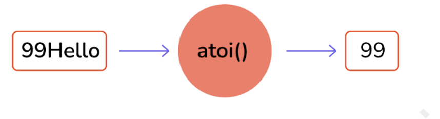

C - Interview questions
BASIC
1. Why is C called a mid-level programming language?
C has characteristics of both assembly-level i.e. low-level and higher-level languages. So as a result, C is commonly called a middle-level language. Using C, a user can write an operating system as well as create a menu-driven consumer billing system.
2. What are the features of the C language?
Some features of the C language are-
It is Simple and Efficient.
C language is portable or Machine Independent.
C is a mid-level Programming Language.
It is a structured Programming Language.
It has a function-rich library.
Dynamic Memory Management.
C is superfast.
We can use pointers in C.
It is extensible.
3. What is a token?
The individual elements of a program are called Tokens. There are following 6 types of tokens are available in C:
Identifiers
Keywords
Constants
Operators
Special Characters
Strings
4. What is the use of printf() and scanf() functions? Also explain format specifiers?
printf() is used to print the output on the display.
scanf() is used to read formatted data from the keyboard.
Some datatype format specifiers for both printing and scanning purposes are as follows:
%d: It's a datatype format specifier for printing and scanning an integer value.
%s: It's a datatype format specifier for printing and scanning a string.
%c: It's a datatype format specifier for displaying and scanning a character value.
%f: The datatype format specifier %f is used to display and scan a float value.
5. What's the value of the expression 5["abxdef"]?
The answer is 'f'.
Explanation: The string mentioned "abxdef" is an array, and the expression is equal to "abxdef"[5]. Why is the inside-out expression equivalent? Because a[b] is equivalent to *(a + b) which is equivalent to *(b + a) which is equivalent to b[a].
6. What is a built-in function in C?
The most commonly used built-in functions in C are scanf(), printf(), strcpy, strlwr, strcmp, strlen, strcat, and many more.
Built-function is also known as library functions that are provided by the system to make the life of a developer easy by assisting them to do certain commonly used predefined tasks. For example, if you need to print output or your program into the terminal, we use printf() in C.
7. What is a Preprocessor?
A preprocessor is a software program that processes a source file before sending it to be compiled. Inclusion of header files, macro expansions, conditional compilation, and line control are all possible with the preprocessor.

8. In C, what is the #line used for?
In C, #line is used as a preprocessor to re-set the line number in the code, which takes a parameter as line number. Here is an example for the same.
#include <stdio.h> /*line 1*/
int main(){ /*line 3*/
printf("Hello world\n"); /*line 4*/
//print current line /*line 5*/
printf("Line: %d\n",__LINE__); /*line 6*/
//reset the line number by 36 /*line 7*/
#line 36 /*reseting*/
//print current line /*line 36*/
printf("Line: %d\n",__LINE__); /*line 37*/
printf("Bye bye!!!\n"); /*line 39*/
/*line 40*/
return 0; /*line 41*/
} /*line 42*/
9. How can a string be converted to a number?
The function takes the string as an input that needs to be converted to an integer.
int atoi(const char *string)
Return Value:
On successful conversion, it returns the desired integer value
If the string starts with alpha-numeric char or only contains alpha-num char, 0 is returned.
In case string starts with numeric character but is followed by alpha-num char, the string is converted to integer till the first occurrence of alphanumeric char.
Converting String to Number

10. How can a number be converted to a string?
The function takes a pointer to an array of char elements that need to be converted, and a format string needs to be written in a buffer as a string
int sprintf(char *str, const char *format, ...)
The output after running the above code:
Output: Value of Pi = 3.141593
11. What is recursion in C?
When a function in C calls a copy of itself, this is known as recursion. To put it another way, when a function calls itself, this technique is called Recursion. Also, this function is known as recursive function.
Syntax of Recursive Function:
void do_recursion()
{
... .. ...
do_recursion();
... .. ...]
}
int main()
{
... .. ...
do_recursion();
... .. ...
}
12. Why doesn’t C support function overloading?
After you compile the C source, the symbol names need to be intact in the object code. If we introduce function overloading in our source, we should also provide name mangling as a preventive measure to avoid function name clashes. Also, as C is not a strictly typed language many things(ex: data types) are convertible to each other in C. Therefore, the complexity of overload resolution can introduce confusion in a language such as C.
When you compile a C source, symbol names will remain intact. If you introduce function overloading, you should provide a name mangling technique to prevent name clashes. Consequently, like C++, you'll have machine-generated symbol names in the compiled binary.
Additionally, C does not feature strict typing. Many things are implicitly convertible to each other in C. The complexity of overload resolution rules could introduce confusion in such kind of language
13. What is the difference between global int and static int declaration?
The difference between this is in scope. A truly global variable has a global scope and is visible everywhere in your program.
#include <stdio.h>
int my_global_var = 0;
int main(void){
printf("%d\n", my_global_var);
return 0;
}
global_temp is a global variable that is visible to everything in your program, although to make it visible in other modules, you'd need an ”extern int global_temp; ” in other source files if you have a multi-file project.
A static variable has a local scope but its variables are not allocated in the stack segment of the memory. It can have less than global scope, although - like global variables - it resides in the .bss segment of your compiled binary.
#include <stdio.h>
int myfunc(int val){
static int my_static_var = 0;
my_static_var += val;
return my_static_var;
}
int main(void) {
int myval;
myval = myfunc(1);
printf("first call %d\n", myval);
myval = myfunc(10);
printf("second call %d\n", myval);
return 0;
}
14. What is a pointer in C?
A pointer is a variable that stores or points to another variable's address. The value of a variable is stored in a normal variable, whereas the address of a variable is stored in a pointer variable.

15. Difference between const char* p and char const* p?
const char* p is a pointer to a const char.
char const* p is a pointer to a char const.
Since const char and char const are the same, it's the same.
16. What is pointer to pointer in C?
In C, a pointer can also be used to store the address of another pointer. A double pointer or pointer to pointer is such a pointer. The address of a variable is stored in the first pointer, whereas the address of the first pointer is stored in the second pointer.
The syntax of declaring a double pointer is given below:
int **p; // pointer to a pointer which is pointing to an integer
17. Why n++ executes faster than n+1 ?
n++ being a unary operation, it just needs one variable. Whereas, n = n + 1 is a binary operation that adds overhead to take more time (also binary operation: n += 1). However, in modern platforms, it depends on few things such as processor architecture, C compiler, usage in your code, and other factors such as hardware problems.
While in the modern compiler even if you write n = n + 1 it will get converted into n++ when it goes into the optimized binary, and it will be equivalently efficient.

18. What is typecasting in C?
Typecasting is the process to convert a variable from one datatype to another. If we want to store the large type value to an int type, then we will convert the data type into another data type explicitly.
Syntax: (data_type)expression;
For Example:
int x;
for(x=97; x<=122; x++)
{
printf("%c", (char)x); /*Explicit casting from int to char*/
}
19. What are the advantages of Macro over function?
Macro on a high-level copy-paste, its definitions to places wherever it is called. Due to which it saves a lot of time, as no time is spent while passing the control to a new function and the control is always with the callee function. However, one downside is the size of the compiled binary is large but once compiled the program comparatively runs faster.
20. What are Enumerations?
Enumeration, also known as Enum in C, is a user-defined data type. It consists of constant integrals or integers that have names assigned to them by the user. Because the integer values are named with enum in C, the whole program is simple to learn, understand, and maintain by the same or even different programmer.
21. When should we use the register storage specifier?
If a variable is used frequently, it should be declared with the register storage specifier, and the compiler may allocate a CPU register for its storage to speed up variable lookup.
INTERMEDIATE
22. Specify different types of decision control statements?
All statements written in a program are executed from top to bottom one by one. Control statements are used to execute/transfer the control from one part of the program to another depending on the condition.
If-else statement.
normal if-else statement.
Else-if statement
nested if-else statement.
Switch statement.
23. What is an r-value and l-value?
The term "r-value" refers to a data value stored in memory at a given address. An r-value is an expression that cannot have a value assigned to it, hence it can only exist on the right side of an assignment operator(=).
The term "l-value" refers to a memory location that is used to identify an object. The l-value can be found on either the left or right side of an assignment operator(=). l-value is frequently used as an identifier.
24. What is the difference between malloc() and calloc()?
calloc() and malloc() are memory dynamic memory allocating functions. The main difference is that malloc() only takes one argument, which is the number of bytes, but calloc() takes two arguments, which are the number of blocks and the size of each block.
25. What is the difference between struct and union in C?
A struct is a group of complex data structures stored in a block of memory where each member on the block gets a separate memory location to make them accessible at once
Whereas in the union, all the member variables are stored at the same location on the memory as a result to which while assigning a value to a member variable will change the value of all other members.
/* struct & union definations*/
struct bar {
int a; // we can use a & b both simultaneously
char b;
} bar;
union foo {
int a; // we can't use both a and b simultaneously
char b;
} foo;
/* using struc and union variables*/
struct bar y;
y.a = 3; // OK to use
y.b = 'c'; // OK to use
union foo x;
x.a = 3; // OK
x.b = 'c'; // NOl this affects the value of x.a!
26. What is call by reference in functions?
When we caller function makes a function call bypassing the addresses of actual parameters being passed, then this is called call by reference. In incall by reference, the operation performed on formal parameters affects the value of actual parameters because all the operations performed on the value stored in the address of actual parameters.
27. What is pass by reference in functions?
In Pass by reference, the callee receives the address and makes a copy of the address of an argument into the formal parameter. Callee function uses the address to access the actual argument (to do some manipulation). If the callee function changes the value addressed at the passed address it will be visible to the caller function as well.
Pass By Reference

28. What is a memory leak? How to avoid it?
When we assign a variable it takes space of our RAM (either heap or RAM)dependent on the size of data type, however, if a programmer uses a memory available on the heap and forgets to a delta it, at some point all the memory available on the ram will be occupied with no memory left this can lead to a memory leak.
int main()
{
char * ptr = malloc(sizeof(int));
/* Do some work */
/*Not freeing the allocated memory*/
return 0;
}
To avoid memory leaks, you can trace all your memory allocations and think forward, where you want to destroy (in a good sense) that memory and place delete there. Another way is to use C++ smart pointer in C linking it to GNU compilers.
29. What is Dynamic memory allocation in C? Name the dynamic allocation functions.
C is a language known for its low-level control over the memory allocation of variables in DMA there are two major standard library malloc() and free. The malloc() function takes a single input parameter which tells the size of the memory requested It returns a pointer to the allocated memory. If the allocation fails, it returns NULL. The prototype for the standard library function is like this:
void *malloc(size_t size);
The free() function takes the pointer returned by malloc() and de-allocates the memory. No indication of success or failure is returned. The function prototype is like this:
void free(void *pointer);
There are 4 library functions provided by C defined under <stdlib.h> header file to facilitate dynamic memory allocation in C programming. They are:
malloc()
calloc()
free()
realloc()
30. What is typedef?
typedef is a C keyword, used to define alias/synonyms for an existing type in C language. In most cases, we use typedef's to simplify the existing type declaration syntax. Or to provide specific descriptive names to a type.
typedef <existing-type> <new-type-identifiers>;
typedef provides an alias name to the existing complex type definition. With typedef, you can simply create an alias for any type. Whether it is a simple integer to complex function pointer or structure declaration, typedef will shorten your code.
31. Why is it usually a bad idea to use gets()? Suggest a workaround.
The standard input library gets() reads user input till it encounters a new line character. However, it does not check on the size of the variable being provided by the user is under the maximum size of the data type which makes the system vulnerable to buffer overflow and the input being written into memory where it isn’t supposed to.
We, therefore, use gets() to achieve the same with a restricted range of input
Bonus: It remained an official part of the language up to the 1999 ISO C standard, but it was officially removed by the 2011 standard. Most C implementations still support it, but at least GCC issues a warning for any code that uses it.
32. What is the difference between #include "..." and #include <...>?
In practice, the difference is in the location where the preprocessor searches for the included file.
For #include <filename> the C preprocessor looks for the filename in the predefined list of system directories first and then to the directories told by the user(we can use -I option to add directories to the mentioned predefined list).
For #include "filename" the preprocessor searches first in the same directory as the file containing the directive, and then follows the search path used for the #include <filename> form. This method is normally used to include programmer-defined header files.
33. What are dangling pointers? How are dangling pointers different from memory leaks?
The dangling pointer points to a memory that has already been freed. The storage is no longer allocated. Trying to access it might cause a Segmentation fault. A common way to end up with a dangling pointer:
#include<stdio.h>
#include<string.h>
char *func()
{
char str[10];
strcpy(str,"Hello!");
return(str);
}
You are returning an address that was a local variable, which would have gone out of scope by the time control was returned to the calling function. (Undefined behavior)
*c = malloc(5izeof(int));
free(c);
*c = 3; //writing to freed location!
In the figure shown above writing to a memory that has been freed is an example of the dangling pointer, which makes the program crash.
A memory leak is something where the memory allocated is not freed which causes the program to use an undefined amount of memory from the ram making it unavailable for every other running program(or daemon) which causes the programs to crash. There are various tools like O profile testing which is useful to detect memory leaks on your programs.
void function(){
char *leak = malloc (10); //leak assigned but not freed
}
34. What is the difference between ‘g’ and “g” in C?
In C double-quotes variables are identified as a string whereas single-quoted variables are identified as the character. Another major difference being the string (double-quoted) variables end with a null terminator that makes it a 2 character array.
35. What is a near pointer and a far pointer in C?
Near Pointer: In general, the near pointer can be considered because it is used to hold the address, which has a maximum size of just 16 bits. We can't store an address with a size larger than 16 bits using the near pointer. All other smaller addresses that are within the 16-bit limit, on the other hand, can be stored. Because we can only access 64kb of data at a time, you might assume the 16 bits are insufficient. As a result, it is regarded as one of the near-pointer's biggest drawbacks, which is why it is no longer commonly used.
Far Pointer: A far pointer is considered a pointer of size 32 bits. It can, however, use the current segment to access information stored outside the computer's memory. Although, in order to use this type of pointer, we usually need to allocate the sector register to store the data address in the current segment.
36. Which structure is used to link the program and the operating system?
The file structure is used to link the operating system and a program. The header file "stdio.h" (standard input/output header file) defines the file. It contains information about the file being used like its current size and its memory location. It contains a character pointer that points to the character which is currently being opened. When you open a file, it establishes a link between the program and the operating system about which file is to be accessed.
37. Suppose a global variable and local variable have the same name. Is it possible to access a global variable from a block where local variables are defined?
No. This isn’t possible in C. It’s always the most local variable that gets preference.
38. Which is better #define or enum?
If we let it, the compiler can build enum values automatically. However, each of the defined values must be given separately.
Because macros are preprocessors, unlike enums, which are compile-time entities, the source code is unaware of these macros. So, if we use a debugger to debug the code, the enum is superior.
Some compilers will give a warning if we use enum values in a switch and the default case is missing.
Enum always generates int-type identifiers. The macro, on the other hand, allowed us to pick between various integral types.
Unlike enum, the macro does not have a defined scope constraint.
ADVANCED
39. How can you remove duplicates in an array?
The following program will help you to remove duplicates from an array.
#include <stdio.h>
int main() {
int n, a[100], b[100], calc = 0, i, j,count;
printf("Enter no. of elements in array: ");
scanf("%d", &n);
printf("Enter %d integers: ", n);
for (i = 0; i < n; i++)
scanf("%d", &a[i]);
for (i = 0; i<n; i++) {
for (j = 0; j<calc; j++) {
if(a[i] == b[j])
break;
}
if (j== calc) {
b[calc] = a[i];
calc++;
}
}
printf("Array obtained after removing duplicate elements: ");
for (i = 0; i<calc; i++) {
printf("%d ", b[i]);
}
return 0;
}
40. Can we compile a program without a main() function?
Yes, we can compile a program without main() function Using Macro.
E.g.
#include<studio.h>
#define abc main
int abc ()
{
printf("Hello World ");
return 0;
}
41. Write a program to get the higher and lower nibble of a byte without using shift operator?
#include<stdio.h>
struct full_byte
{
char first : 4;
char second : 4;
};
union A
{
char x;
struct full_byte by;
};
main()
{
char c = 100;
union A a;
a.x = c;
printf("the two nibbles are: %d and %d\n", a.by.first, a.by.second);
}
42. How do you override a defined macro?
To override a defined macro we can use #ifdef and #undef preprocessors as follows:
#ifdef A
#undef A
#endif
#define A 10
If macro A is defined, it will be undefined using undef and then defined again using define.
43. Write a C program to check if it is a palindrome number or not using a recursive method.
#include <stdio.h>
#include <conio.h>
int reverse(int num);
int isPalindrome(int num);
int main()
{
int num;
printf("Enter a number: ");
scanf("%d", &num);
if(isPalindrome(num) == 1)
{
printf("the given number is a palindrome");
}
else
{
printf("the given number is not a palindrome number");
}
return 0;
}
int isPalindrome(int num)
{
if(num == reverse(num))
{
return 1;
}
return 0;
}
int reverse(int num)
{
int rem;
static int sum=0;
if(num!=0){
rem=num%10;
sum=sum*10+rem;
reverse(num/10);
}
else
return sum;
return sum;
}
44. C program to check the given number format is in binary or not.
#include<stdio.h>
#include<conio.h>
int main() {
int j,num;
printf("Please enter a number :");
scanf("%d",&num);
while(num>0)
{
j=num%10;
if( j!=0 && j!=1 )
{
printf("num is not binary");
break;
}
num=num/10;
if(num==0)
{
printf("num is binary");
}
}
getch();
}
45. C Program to find a sum of digits of a number using recursion.
#include<stdio.h>
#include<conio.h>
int sumOfDigits(int num)
{
static int sum = 0;
int rem;
sum = sum + (num%10);
rem = num/10;
if(rem > 0)
{
sumOfDigits(rem);
}
return sum;
}
int main() {
int j,num;
printf("Please enter a number :");
scanf("%d",&num);
printf("sum of digits of the number = %d ",sumOfDigits(num));
getch();
}
46. Can you tell me how to check whether a linked list is circular?
Single Linked List

Circular Linked List
Circular linked list is a variation of a linked list where the last node is pointing to the first node's information part. Therefore the last node does not point to null.
Algorithm to find whether the given linked list is circular
A very simple way to determine whether the linked list is circular or not
Traverse the linked list
Check if the node is pointing to the head.
If yes then it is circular.
Let's look at the snippet where we code this algorithm.
Create a structure for a linked list
Declare
-Variable to store data of the node.
-Pointer variable of struct type to store the address of next node.
function of datatype tool isCircular(firstgode){
-Store the value of first node in temp variable and make it traverse all nodes.
-temp-firstgode
-tempenext node pointed by temp(temp->next)
-run until temp is at null or firstNode
if (temp at null)
not circular and returns false
if (temp points first node)
return true as its circular.
}
function of datatype node newNode(data){
-To insert new nodes and link each one of them to the previous node by storing the address of the new node to the previous one.
-Then make them point to NULL.
}
In int main function
-First insert nodes for circular linked list and check its nature by calling isCircular function.
-Since it is true through if statement it prints "yes..
-Second insert a normal linked list and check its nature by calling isCircular function. As its not circular it prints "no",
47. What is the use of a semicolon (;) at the end of every program statement?
It is majorly related to how the compiler reads( or parses) the entire code and breaks it into a set of instructions(or statements), to which semicolon in C acts as a boundary between two sets of instructions.
48. How to call a function before main()?
To call a function before the main(), pragma startup directive should be used. E.g.-
#pragma startup fun
void fun(){
printf("In fun\n");
}
main(){
printf("In main\n");
}
The output of the above program will be -
In fun
In main
This pragma directive, on the other hand, is compiler-dependent. This is not supported by gcc. As a result, it will ignore the startup directive and produce no error. But the output, in that case, will be -
In main
49. Differentiate between the macros and the functions.
The differences between macros and functions can be explained as follows:
Macros Functions
It is preprocessed rather than compiled. It is compiled not preprocessed.
It is preprocessed rather than compiled. Function checks for compilation errors.
Code length is increased. Code length remains the same.
Macros are faster in execution. Functions are a bit slower in execution.
Macros are useful when a small piece of code is used multiple times in a program. Functions are helpful when a large piece of code is repeated a number of times.
50. Differentiate Source Codes from Object Codes

Source Code and Object Code Difference
The difference between the Source Code and Object Code is that Source Code is a collection of computer instructions written using a human-readable programming language while Object Code is a sequence of statements in machine language, and is the output after the compiler or an assembler converts the Source Code.
The last point about Object Code is the way the changes are reflected. When the Source Code is modified, each time the Source Code needs to be compiled to reflect the changes in the Object Code.
51. What are header files and what are its uses in C programming?

Header Files in C
In C header files must have the extension as .h, which contains function definitions, data type definitions, macro, etc. The header is useful to import the above definitions to the source code using the #include directive. For example, if your source code needs to take input from the user do some manipulation and print the output on the terminal, it should have stdio.h file included as #include <stdio.h>, with which we can take input using scanf() do some manipulation and print using printf().
52. When is the "void" keyword used in a function
The keyword “void” is a data type that literally represents no data at all. The most obvious use of this is a function that returns nothing:
void PrintHello()
{
printf("Hello\n");
return; // the function does "return", but no value is returned
}
Here we’ve declared a function, and all functions have a return type. In this case, we’ve said the return type is “void”, and that means, “no data at all” is returned.
The other use for the void keyword is a void pointer. A void pointer points to the memory location where the data type is undefined at the time of variable definition. Even you can define a function of return type void* or void pointer meaning “at compile time we don’t know what it will return” Let’s see an example of that.
void MyMemCopy(void* dst, const void* src, int numBytes)
{
char* dst_c = reinterpret_cast<char*>(dst);
const char* src_c = reinterpret_cast<const char*>(src);
for (int i = 0; i < numBytes; ++i)
dst_c[i] = src_c[i];
}
53. What is dynamic data structure?
A dynamic data structure (DDS) refers to an organization or collection of data in memory that has the flexibility to grow or shrink in size, enabling a programmer to control exactly how much memory is utilized. Dynamic data structures change in size by having unused memory allocated or de-allocated from the heap as needed.
Dynamic data structures play a key role in programming languages like C, C++, and Java because they provide the programmer with the flexibility to adjust the memory consumption of software programs.
54. Add Two Numbers Without Using the Addition Operator
For the sum of two numbers, we use the addition (+) operator. In these tricky C programs, we will write a C program to add two numbers without using the addition operator.
#include<stdio.h>
#include<stdlib.h>
int main()
{
int x, y;
printf("Enter two number: ");
scanf("%d %d",&x,&y);
// method 1
printf("%d\n", x-(-y));
// method 2
printf("%d\n", -(-x-y));
// method 3
printf("%d\n", abs(-x-y));
// method 4
printf("%d", x-(~y)-1);
return 0;
}
55. Subtract Two Number Without Using Subtraction Operator
#include<stdio.h>
#include<stdlib.h>
int main()
{
int x, y;
printf("Enter two number: ");
scanf("%d %d",&x,&y);
printf("%d", x+(~y)+1);
return 0;
}
The bitwise complement operator is used in this program. The bitwise complement of number ~y=-(y+1). So, expression will become x+(-(y+1))+1=x-y-1+1=x-y
56. Multiply an Integer Number by 2 Without Using Multiplication Operator
#include<stdio.h>
int main()
{
int x;
printf("Enter a number: ");
scanf("%d",&x);
printf("%d", x<<1);
return 0;
}
The left shift operator shifts all bits towards the left by a certain number of specified bits. The expression x<<1 always returns x*2. Note that the shift operator doesn’t work on floating-point values.
For multiple of x by 4, use x<<2. Similarly x<<3 multiply x by 8. For multiple of the number x by 2^n, use x<<n.
57. Check whether the number is EVEN or ODD, without using any arithmetic or relational operators
#include<stdio.h>
int main()
{
int x;
printf("Enter a number: ");
scanf("%d", &x);
(x&1)?printf("Odd"):printf("Even");
return 0;
}
The bitwise and(&) operator can be used to quickly check the number is odd or even.
58. Reverse the Linked List. Input: 1->2->3->4->5->NULL Output: 5->4->3->2->1->NULL
Assume that we have linked list 1 → 2 → 3 → Ø, we would like to change it to Ø ← 1 ← 2 ← 3.
While you travel the linked list, change the current node's next pointer to point to its previous element. reference to the previous nodes should be stored into a temp variable as shown so that we don’t lose track of the swapped node. You also need another pointer to store the next node before changing the reference. Also when we are done return the new head of the reversed list.
/* Function to reverse the linked list */
static void reverse(struct Node** head_ref)
{
struct Node* prev = NULL;
struct Node* current = *head_ref;
struct Node* next;
while (current != NULL)
{
// store next
next = current->next;
// reverse curr node pointer
current->next = prev;
// move pointer one position ahead
prev = current;
current = next;
}
*head_ref = prev;
}
59. Check for Balanced Parentheses using Stack
Given a string s containing just the characters '(', ')', '{', '}', '[' and ']', determine if the input string is valid.
An input string is valid if:
Open brackets must be closed by the same type of brackets.
Open brackets must be closed in the correct order.
Example 1:
Input: s = "()"
Output: true
Example 2:
Input: s = "()[]{}"
Output: true
Example 3:
Input: s = "(]"
Output: false
Below is the source code for C Program to Check for Balanced Parentheses using Stack which is successfully compiled and run on Windows System to produce desired output as shown below :
int check(char exp[] )
{
int i;
char temp;
for(i=0;i<strlen(exp);i++)
{
if(exp[i]=='(' || exp[i]=='{' || exp[i]=='[')
push(exp[i]);
if(exp[i]==')' || exp[i]=='}' || exp[i]==']')
if(top==-1) /*stack empty*/
{
printf("Right parentheses are more than left parentheses\n");
return 0;
}
else
{
temp=pop();
if(!match(temp, exp[i]))
{
printf("Mismatched parentheses are : ");
printf("%c and %c\n",temp,exp[i]);
return 0;
}
}
}
if(top==-1) /*stack empty*/
{
printf("Balanced Parentheses\n");
return 1;
}
else
{
printf("Left parentheses more than right parentheses\n");
return 0;
}
}

60. Program to find n’th Fibonacci number
Fibonacci sequence is characterized by the fact that every number after the first two is the sum of the two preceding ones. For example, consider below sequence
0, 1, 1, 2, 3, 5, 8, 13, 21, 34, . .. and so on
Where in F{n} = F{n-1} + F{n-2} with base values F(0) = 0 and <code>F(1) = 1
Below is naive implementation for finding the nth member of the Fibonacci sequence
// Function to find the nth Fibonacci number
int fib(int n)
{
if (n <= 1) {
return n;
}
return fib(n - 1) + fib(n - 2);
}
int main()
{
int n = 8;
printf("nth Fibonacci number is %d", fib(8));
return 0;
}
61. Write a program to find the node at which the intersection of two singly linked lists begins.
Let's take an example of the following two linked lists which intersect at node c1.
Intersection of Two Linked List

Solution -
Get count of the nodes in the first list, let count be c1.
Get count of the nodes in the second list, let count be c2.
Get the difference of counts d = abs(c1 – c2)
Now traverse the bigger list from the first node till d nodes so that from here onwards both the lists have an equal no of nodes
Then we can traverse both the lists in parallel till we come across a common node. (Note that getting a common node is done by comparing the address of the nodes)
// Function to get the intersection point
// of the given linked lists
int getIntersectionNode(Node* head1, Node* head2)
{
Node *curr1 = head1, *curr2 = head2;
// While both the pointers are not equal
while (curr1 != curr2) {
// If the first pointer is null then
// set it to point to the head of
// the second linked list
if (curr1 == NULL) {
curr1 = head2;
}
// Else point it to the next node
else {
curr1 = curr1->next;
}
// If the second pointer is null then
// set it to point to the head of
// the first linked list
if (curr2 == NULL) {
curr2 = head1;
}
// Else point it to the next node
else {
curr2 = curr2->next;
}
}
// Return the intersection node
return curr1->data;
}
62. Merge Two sorted Linked List
Merge two sorted linked lists and return them as a sorted list. The list should be made by splicing together the nodes of the first two lists.

NodePtr merge_sorted(NodePtr head1, NodePtr head2) {
// if both lists are empty then merged list is also empty
// if one of the lists is empty then other is the merged list
if (head1 == nullptr) {
return head2;
}
else if (head2 == nullptr) {
return head1;
}
NodePtr mergedHead = nullptr;
if (head1->data <= head2->data) {
mergedHead = head1;
head1 = head1->next;
}
else {
mergedHead = head2;
head2 = head2->next;
}
NodePtr mergedTail = mergedHead;
while (head1 != nullptr && head2 != nullptr) {
NodePtr temp = nullptr;
if (head1->data <= head2->data) {
temp = head1;
head1 = head1->next;
}
else {
temp = head2;
head2 = head2->next;
}
mergedTail->next = temp;
mergedTail = temp;
}
if (head1 != nullptr) {
mergedTail->next = head1;
}
else if (head2 != nullptr) {
mergedTail->next = head2;
}
return mergedHead;
}
Runtime Complexity Linear, O(m + n) where m and n are lengths of both linked lists.
Memory Complexity Constant, O(1)
Maintain a head and a tail pointer on the merged linked list. Then choose the head of the merged linked list by comparing the first node of both linked lists. For all subsequent nodes in both lists, you choose the smaller current node and link it to the tail of the merged list, moving the current pointer of that list one step forward.
You keep doing this while there are some remaining elements in both lists. If there are still some elements in only one of the lists, you link this remaining list to the tail of the merged list.
Initially, the merged linked list is NULL. Compare the value of the first two nodes and make the node with the smaller value the head node of the merged linked list. In this example, it is 4 from head1.
Since it’s the first and only node in the merged list, it will also be the tail. Then move head1 one step forward.
Conclusion:
C is the foundational language from which practically all other languages are built. C is the programming language's base. For writing system applications, it is a very popular and frequently used language. Even if new languages have surpassed it in popularity, it remains one of the most popular programming languages. The C questions listed here will aid you in interviews as well as improve your learning. I hope you found these to be helpful!
63.
Additional
Notes
Sources: